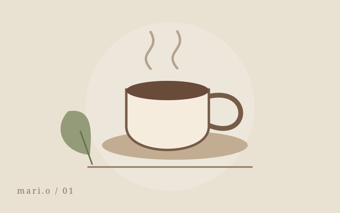

温もりのある世界観
カフェ・雑貨・ライフスタイルに似合う、温かみのあるナチュラルな映像。余白と色合いを活かし、シンプルに魅力を伝えます。

A little warmth in every frame.mari.o / visual stories01 — SELECTED WORKS
日々の小さな魅力を、
ひとつの物語に。
02 — ABOUT ME
商品やサービスの魅力を、見る人の心に自然と届けられる動画づくりを目指しています。
披露宴の音響・照明業務に4年間携わり、音楽と演出のタイミングや、空間の雰囲気をつくる大切さを学びました。
その経験を活かし、映像と音楽の調和や、見る人の印象に残る演出を大切にしています。
やわらかな光、落ち着いた色合い、心地よいテンポを活かした、温かみのあるナチュラルな表現が得意です。
Canvaでのデザイン制作経験に加え、AIツールと動画編集ソフトを組み合わせ、作品の世界観に合わせた映像づくりに取り組んでいます。
ライティング・リライト業務、掲示板まとめ系ショート動画の編集経験もあります。
03 — MY CREATIVE APPROACH
カフェ・雑貨・ライフスタイルに似合う、温かみのあるナチュラルな映像。余白と色合いを活かし、シンプルに魅力を伝えます。
BGMと映像のタイミングを意識した、心地よいテンポの演出。テロップや効果音も、世界観に合わせて丁寧に重ねます。
AIを活用した雰囲気のある画像・映像素材と、編集・デザインを組み合わせ、一つひとつの作品の表現を広げます。
一つひとつの作品に丁寧に向き合い、
伝えたい魅力や世界観を大切に制作します。
04 — CONTACT
制作のご相談・ご依頼は、メールにてお気軽にご連絡ください。
まだかたちになっていないアイデアも、一緒に育てていきましょう。